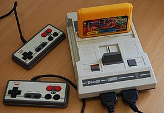
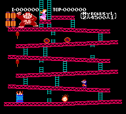
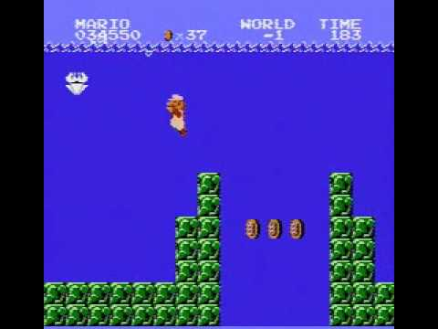

Дэнди
Дата создания: 1992 г.
Денди - игровая приставка в формате 8 бит, которая была создана в России к 1992 году. Создана в Тайване. Обрела большую популярность на границе СССР и в итоге стала культовой. Денди является клоном американской консоли NES - Nintendo Entertainment System, выпущенная в 1985 (США) На неё были добавлены такие популярные игры: Super Mario Bros, The Legend Of Zelda, Donkey Kong и т.д.
6 июля 1981
Также, про консоль существовало телепередача.
Денди - Новая Реальность: телепередача. Её транслировали на канале 2х2 с 1994 г. Ведущиим передачи был Сергей Евгеньевич Супонев.
В передаче рассказывали об игровых приставках того времени: Sega, Dendy, Super Nintendo и историю, информацию о них.
Также, иногда в передачу звонили зрители. А некоторым дарили подарок в виде картриджа или консоли.
Было 2 сезона, последний эпизод был создан 26 января 1996 г.
Интересные / популярные факты про Денди.
У консоли был печально известный картридж 9999, в котором существовали не проходимые уровни игры Super Mario Bros.
У маскота Денди - слонёнка - было несколько дизайнов.
Существует более пяти вариаций консоли, включая Dendy Junior, Dendy Clasic II и Dendy Junior II.